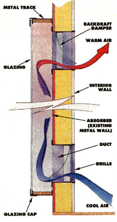
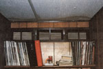
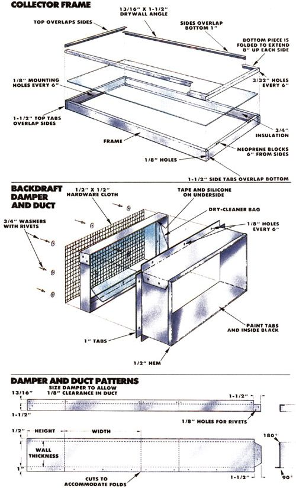
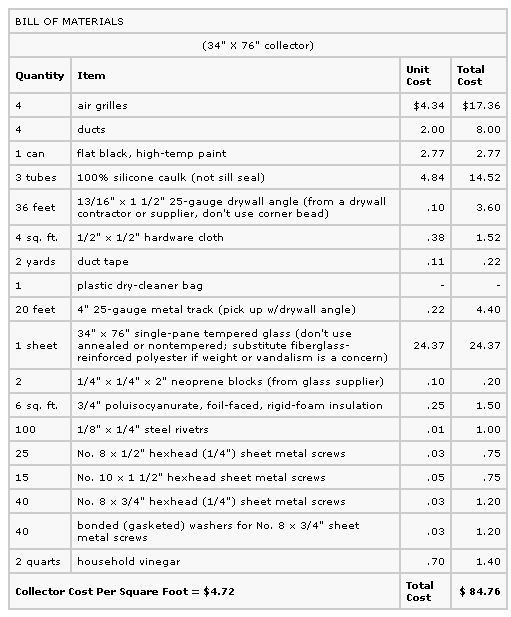

From Mother No. 91
The easy, low-cost way to add solar heat to you mobile home or metal outbuilding.
The integrated thermosiphon air panel (TAP for short) is a fresh approach to solar air heating-one that's perfectly suited to the 10 million or so folks who live in mobile homes and to owners of the countless metal-sided storage, industrial, and commercial buildings around the world. By making use of the building itself as a part of the collector, the TAP keeps material costs down, simplifies construction, and maintains a low visual profile. And because it relies on thermosiphoning to move air past the absorber, the TAP avoids the complexity and cost of an electrically driven fan.
What do you need to build your own TAP? The critical element, of course, is sunlight: You need a metal-sided wall that faces within 25° of south and that isn't shaded in the crucial winter months. You'll also need some hand tools, such as a drill, metal snips, screwdrivers, a caulking gun, a 1/4" nut driver, and maybe a circular saw. Add to these items less than $100 worth of locally available materials and a weekend's work, and you'll have solar heat flowing into your home.
A rule of thumb for solar air heaters is to allow one square foot of collector for every 10 square feet of floor area you wish to heat. (The room should first be caulked, weatherstripped, and at least moderately insulated. Always take care of such energy-conserving fundamentals before adding solar heat.) Thus, a 180-square-foot room suggests an 18-square-foot collector. This, however, is only a rough estimate. The available wall space for mounting the collector and the limitation of standard tempered glass sizes (28", 34", or 46" X 76"; 34" or 46" X 90") will determine the actual dimensions of your collector.
Because the TAP relies on passive airflow to distribute the heat collected on its absorber, you'll get the best results by sizing the collector to warm the room directly adjacent to the wall on which it's mounted. Though heat will eventually be transferred to other rooms, oversizing the TAP to try to heat more than one room will make the first room too warm.
The collector frame is made of 25-gauge, 4" or 6" metal track available from a drywall supplier or contractor. To insure that air moves through the collector without restriction, use the 4" material for any TAP that's less than 80" high and the 6" metal track for taller units.
Air moves into and out of the collector through metal grilles that run all the way across the top and bottom of the unit, and these too must be large enough to prevent restriction. The height of the grilles should be equal to twice the metal track size: 4" track requires 8"-high grilles. Because wall studs will be in the way, however, you'll probably have to use several grilles to cover the intake and exhaust areas. Unfortunately, when you shop for grilles, you may find that the perfect sizes simply aren't available. If you run into this problem, compromise by using the next larger size; you don't want to take a chance of restricting free movement of air through the collector.
Many metal structures have horizontal supports called purlins, as opposed to (or in addition to) vertical studs. It's desirable from a structural viewpoint to secure the collector to these members at the top, bottom, or both, if possible. You can find the purlins by looking for horizontal rows of screws that penetrate the exterior metal siding.
Once you've found a likely spot, check inside and out for electrical outlets or other services that might be in the way of the intake or exhaust registers. When you feel certain that you've located an obstruction-free place for your collector, clean the siding in the general area, and mark out the dimensions for the device with masking tape. (Add 1/2" to the vertical and horizontal dimensions of the glass to allow for the frame. Thus, the size of a collector with 34" X 76" glass will be 34-1/2" X 76-1/2".) Inside this area, mark the duct locations with chalk lines, but be sure to leave about 1-3/4" between the frame and ducts to allow sufficient space for mounting the frame and attaching the 1" tabs from the ducts.
For safety's sake, turn off all power before cutting into either the exterior or interior wall. Use a hammer and an old screwdriver to punch through the building's exterior skin within the area where each duct will be located, and then carefully trim out each opening with aviation snips. (Be mindful of razor-sharp metal edges while you're cutting.)
Next, remove the insulation from the duct area, and use a nail or drill to precisely transfer the corners of the duct openings through the interior wall. After double-checking your measurements, trim out the interior drywall or paneling with a razor knife or a keyhole saw.
Now paint the exterior wall within the taped area with high-temperature, flat black paint. Spraying is easier than brushing and will give you a more effective absorber surface, but be sure to follow the instructions on the can's label.
You'll use sheet metal ducts to fit through the openings you've just cut out. If you're competent with metal shears and have a break for bending the sheets, you can make the ducts yourself, according to the dimensions we've provided. But if you'd prefer, just take the drawing to a sheet metal shop and have them fold up the ducts for you.
When the ducts are completed, soak them in vinegar (overnight is best) to etch the surfaces. Paint doesn't adhere well to galvanized metal surfaces, so don't overlook this important step! After the vinegar bath, rinse the ducts, dry the surfaces, and paint them. Once they're dry, fit the ducts through the openings and attach their metal tabs to the siding with rivets and to the studs or purlins with No. 8 X 1/2" screws. (Always wear safety glasses when riveting, since a stem will occasionally fly out with enough force to cause injury.) Caulk the seams in the ducts, the joint where they fit to the building, and all rivets and screws.
Assemble the damper frames from drywall angle (not corner bead!) to the dimensions shown (make them 1/8" smaller than the ducts overall), and trim 1/2" hardware cloth to fit over the finished frames. Attach these screen pieces to the damper frames by first drilling 1/8" holes about every 6" around each frame and then riveting (with 3/4" washers) the hardware cloth to the frames.
Treat the metal dampers with vinegar, rinse them, and apply paint when they're dry. Now cut pieces from a dry-cleaner bag (or other very thin plastic) to fit within the frames. Use duct tape to attach these to the top inside of each frame, and apply a thin layer of silicone caulk around the tape to prevent it from peeling away.
The finished dampers may now be "friction fitted" into the ducts, as shown in the drawing on page 101. The upper damper must be positioned so that it will open when air attempts to exit from the collector, and the lower one must be set in the opposite direction. A fine bead of silicone where the dampers meet the ducts will insure an airtight seal, but be careful to avoid getting any fresh caulk on the damper flaps. Secure the dampers to the ducts with a 1/2" sheet metal screw through each side.
The slightest breath of air in the desired direction should open the plastic flaps in the dampers, but any reverse action (air flowing through the collector in the opposite direction at night and thus becoming cooled) will be stopped.
Frame It
The collector sides, top, and bottom should be cut from the metal track to the proper size with aviation snips, drilled for assembly and mounting, and squared and riveted together as shown. Although it's not mandatory, you may want to paint the outside of your collector frame to match the color of your building . . . but don't forget to prepare the surface first. Be sure to caulk all joints-inside and out-with silicone.
Enlist the help of a friend for the final few steps of assembly: You'll need an extra pair of hands to hold things in place while you affix the collector to the wall. Lay the collector frame on the ground with its glazing side down, and apply a layer of silicone caulk all around the edge where the frame will contact the wall. Then quickly (before the caulk dries) position the assembly on the wall. Plumb and level the frame, and while your friend holds it tightly against the wall, drill 3/32" pilot holes through the guides in the frame and into the purlins. Attach the collector to the wall with No. 10 X 1-1/2" hexhead or sheet metal screws.
Using the remaining mounting holes as guides, drill 1/8" holes through the siding, and rivet the collector frame to the siding. Finally, caulk the perimeter of the frame carefully, filling all gaps.
To isolate your system thermally, cut rigid insulation to fit snugly into the top, bottom, and sides of the collector. Place a small amount of silicone on the inside of the track, press the insulation in place, and caulk all edges to create an effective seal.
The tempered glass sheet mounts to the collector frame on a 1/2" bead of silicone caulk (with neoprene blocks at the bottom edge for extra security) and is secured with a glazing cap made from drywall angle trimmed to the dimensions shown. Once you've cut the four lengths of cap, mark and drill 3/32" holes every 6" along the short side of the angle, and treat and paint them. Then glue the neoprene blocks to the collector frame as shown.
Thoroughly clean both sides of the glazing, and collect all the materials and tools you'll need for this last but crucial step. You'll need your electric drill with 3/32" bit, a fistful of No. 8 X 3/4" hexhead sheet metal screws with bonded washers, a 1/4" nut driver (or, better yet, an attachment for your drill), and silicone caulk.
Place the 1/2" bead of silicone on the frame, and lift the glass into place. (Remember, always carry glass on edge-never flat.) While your companion holds the glass, drill 3/32" starter holes in the collector frame, using the holes in the glazing caps as guides. Install the bottom cap first, and follow with the sides and top to give a shingled effect that will shed water. (The power screwdriver is a lifesaver at this stage.) For the best results, push the glazing cap firmly against the glass while you're placing the screws.
You can expect to save 15 to 20% on your fuel bill in an area served by a TAP. Specifically, computer analysis has shown that the system should pay back your investment in three to seven years-depending on how much you pay for conventional heating. That's not a bad return on investment.
EDITOR'S NOTE: Steve McCarney, who has so generously shared his collector design in this article, teaches solar retrofit at Colorado Mountain College. For more information on the intensive oneyear program, write to Steve at CMC, 3000 County Road 114, Glenwood Springs, CO 81601, or call 303/945-7481.
1. Read the label before you purchase. Be sure that the caulk you're about to buy is compatible with the materials you're using. And don't skimp-use only 100% silicone and beware of cheaper brands.
2. Clean and dry. Thoroughly remove all dust, dirt, and moisture before you caulk.
3. Keep your cool. Hot surfaces make silicone difficult to apply. Don't caulk during the heat of the day.
4. Work fast! Silicone caulk skins over (dries) quickly. Once materials (such as glazing) are embedded in the caulk, they shouldn't be moved. An ineffective seal can result. Be sure you have everything at hand and positioned before the caulk leaves the tube.
5. A 1/8" opening in the tube's nozzle will dispense enough silicone for most jobs.
6. Slick the beads. Caulking wouldn't be half as messy but for this: Run your finger (rubber gloves work great) over the bead immediately after you caulk a joint or seam. This action forces the silicone into any gaps and insures a good seal.
7. A plentiful supply of rags or towels to wipe your hands on will save pant legs and shirt sleeves.
8. Paint doesn't adhere to silicone caulk, so coat everything before you caulk.
9. Disengage the caulk gun after each use to avoid wasting the globs that inevitably ooze out under sustained pressure.
10. Push a large nail into the nozzle to save a partially used tube.
|
 The integrated thermosiphoning air panel (TAP) is the perfect solar collector for metal buildings because the side of the structure can act as the unit's absorber plate. |
 Grilles inside the building?at the top and bottom of the collector?allow room air to circulate through the solar heater and be warmed. Each duct opening should ideally be about twice as large as a horizontal cross section through the solar collector itself. |
 |
|
 |
|
|